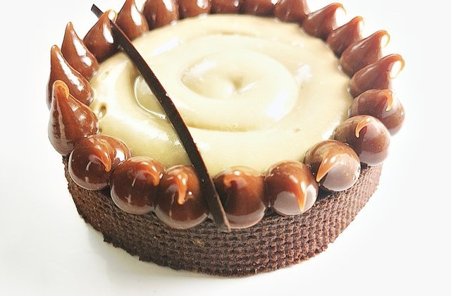

Tartelette
Cette Tartelette est composée d'un pâte sucré chocolat, d'une fine...
Blog entièrement consacré à la pâtisserie, celle des passionnés comme des débutants, des courageux comme des fainéants.
En partenariat avec PATRICK HERMAND
Jusqu’au 31 décembre, je vous fais profiter de 25 % de réduction sur l’achat d’un robot Artisan Mini (celui que vous voyez en photo à toutes les sauces sur mon blog et devant lequel vous bavez régulièrement).
Cette Tartelette est composée d'un pâte sucré chocolat, d'une fine...
Pour cet entremet tout citronné, j’ai souhaité allier la légèreté d’une mousse à l’onctuosité d’une crème pour en faire un dessert frais, léger et surtout gourmand. Vous avez envie d’y plonger une petite cuillère ? Alors si ça vous tente...
Gâteau avec une génoise au chocolat, sa crème au chocolat et sa chantilly...